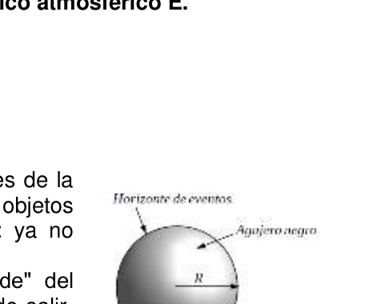

Agujeros Negros y Enanas Blancas (Nivel 2)
Problema 3: Agujeros Negros y Enanas Blancas
PARTE A. Agujeros negros Los Agujeros Negros, una de las predicciones más fascinantes de la teoría de la Relatividad General de Einstein, son objetos extremadamente densos, tanto, que si algo cae al agujero: ya no puede escapar, ni siquiera la luz!!! Están caracterizados por un horizonte de eventos (el ”borde” del agujero negro) que delimita la zona desde la cual no se puede salir. Afuera del horizonte de eventos, el campo gravitatorio es similar al producido por un objeto material ordinario.
El objetivo, de esta parte del problema, es encontrar la relación entre la masa y el radio de un agujero negro. Para lograrlo, combinaremos ideas de física Newtoniana y Relatividad y, si bien los resultados serán estimativos, la relación que obtendremos de esta forma es idéntica a la predicha por la Teoría de la Relatividad General.
Los conceptos relevantes a tener en cuenta son:
• Velocidad de escape: es la mínima velocidad con la que se tiene que lanzar una partícula desde la superficie de un objeto, para que se aleje infinitamente del cuerpo (es decir, la distancia r al centro del objeto se hace infinita: 𝑟→∞).
• Postulado de la Teoría de la Relatividad: nada puede moverse más rápido que la luz.
A1. Calcule la velocidad de escape 𝒗𝒆𝒔𝒄 desde un objeto esférico de masa 𝑴 y radio 𝑹.
Ahora, buscaremos la relación que deben tener 𝑀 y 𝑅 para que este objeto represente a un agujero negro, es decir, para que ninguna partícula, ni siquiera la luz, pueda escapar desde su horizonte de eventos. Para esto puede ser conveniente pensar a la luz como compuesta por partículas que se mueven a velocidad 𝑐.
A2. Suponiendo que podemos utilizar la expresión de 𝒗𝒆𝒔𝒄 (hallada en el item anterior) para sistemas relativistas, encuentre la cota superior más pequeña para el radio 𝑹 del horizonte de eventos de un agujero negro de masa 𝑴.
Nota:
-
Los sistemas relativistas son aquellos que involucran velocidades próximas a la de la luz y/o campos gravitatorios muy intensos.
-
Una cota superior para una cantidad 𝑓 es un valor 𝑓𝑠𝑢𝑝 que es mayor o igual a 𝑓.
16 - OAF 2018 PARTE B. Enanas blancas Las estrellas se mantienen en equilibrio hidrostático debido al balance entre la atracción gravitatoria (hacia adentro) y la presión térmica que resulta de los procesos nucleares (hacia afuera).
Cuando el combustible nuclear se agota, la atracción gravitatoria domina y la estrella comienza a colapsar. Sin embargo, si la masa de la estrella es menor que cierto valor crítico, llamado Masa de Chandrasekhar, existe otro proceso, puramente cuántico, que es capaz de detener el colapso gravitatorio. Ese proceso se basa en el principio de exclusión de Pauli, que dice que no puede haber dos electrones en el mismo estado cuántico en una cierta región. Cuando la estrella se contrae, los electrones son forzados a ocupar estados de mayor energía, generando una presión (presión de degeneración) que balancea esta contracción si la masa de la estrella es menor que la Masa de Chandrasekhar; este sistema en equilibrio se conoce como Enana Blanca. Si la masa de la estrella es mayor que la Masa de Chandrasekhar, la presión de degeneración es insuficiente para detener el colapso y el estado final, mucho más denso, puede ser una estrella de neutrones o un agujero negro.
El objetivo de esta parte del problema es estimar la Masa de Chandrasekhar.
Para simplificar las expresiones, puede despreciar los números como 2,3,5, π, etc. que aparezcan en la resolución de los items siguientes. NO desprecie los valores de las constantes físicas presentadas al final del enunciado.
Considere que una estrella es una bola de átomos de hidrógeno (constituidos por un electrón y un protón), de densidad uniforme, masa 𝑀 y radio 𝑅.
B1. Escriba el número de átomos por unidad de volumen, 𝒏, en términos de la masa total de la estrella 𝑴, el radio de la estrella 𝑹 y la masa del protón 𝒎𝒑.
Nota:
- Tenga en cuenta que la masa 𝑚𝑒 de los electrones es mucho menor que la masa 𝑚𝑝 de los protones (𝑚𝑒≪𝑚𝑝).
B2. Encuentre la relación entre el número de átomos por unidad de volumen, 𝒏, y el número de electrones por unidad de volumen, 𝒏𝒆.
Suponiendo que la energía cinética promedio de los átomos en la estrella es 𝐸𝑎𝑡,
B3. Escriba la energía cinética 𝑬𝑲 del conjunto de todos los átomos de la estrella, en términos de 𝒏, 𝑬𝒂𝒕 y 𝑹.
Para electrones ultra relativistas (con velocidades próximas a 𝑐) la energía promedio de los átomos se puede aproximar de la siguiente manera
𝐸𝑎𝑡≈𝑝𝑒𝑐 (1)
donde 𝑝𝑒 es el impulso lineal promedio de los electrones.
Suponga que hay un electrón en cada volumen cúbico de lado 𝜆 donde
𝜆= ħ 𝑝𝑒 2)
OAF 2018 - 17 B4. Escriba el impulso lineal 𝒑𝒆 en términos del número de electrones por unidad de volumen, 𝒏𝒆 y de ħ.
B5. A partir de lo encontrado en los items anteriores, y usando la ecuación (1) escriba la energía cinética 𝑬𝑲 en términos de ħ, 𝒎𝒑, 𝑹 y 𝑴. Exprésela en la forma 𝑬𝑲= 𝜷 𝑹 e identifique el valor de 𝜷, independiente de 𝑹.
Considere que la energía total de la estrella se puede aproximar por la suma de la energía de formación gravitatoria 𝐸𝐺 y la energía cinética 𝐸𝐾, esto es
𝐸𝑡𝑜𝑡𝑎𝑙= 𝐸𝐺+ 𝐸𝐾 (3)
Para una estrella esférica y uniforme, la energía de formación es
𝐸𝐺= − 𝛼 𝑅 (4) con 𝛼= 3 5 𝐺𝑀2 (5)
Usando las ecuaciones (3), (4), (5) y lo presentado en el ítem B5, la energía total de la estrella toma la forma
𝐸𝑡𝑜𝑡𝑎𝑙= −𝛼+𝛽 𝑅 (6)
B6. Considerando que los sistemas evolucionan minimizando su energía total, indique cual sería el comportamiento del radio 𝑹 de la estrella en la evolución. Es decir:¿el radio tiende a disminuir?, ¿se mantiene constante?, ¿tiende a aumentar? Analice esta situación en los siguientes casos:
-
𝜶> 𝛽
-
𝜶= 𝜷
-
𝜶< 𝛽
donde 𝜶 y 𝜷 son las cantidades que aparecen en la fórmula de la energía total (6).
B7. A partir de la configuración de equilibrio identificada en el item anterior, determine la Masa de Chandrasekhar 𝑴𝑪. Exprésela en términos de ħ, 𝑮, 𝒄 y 𝒎𝒑.
Usando los valores de las cantidades físicas presentadas al final del enunciando:
B8. Calcule el valor numérico del cociente 𝑴𝑪 𝑴𝒔𝒐𝒍. Expréselo con una cifra significativa.
Se sabe que el radio 𝑅𝑒𝑛𝑎𝑛𝑎 de una enana blanca es proporcional al producto de ħ𝑗,
(𝐺𝑐)𝑘 y (𝑚𝑒𝑚𝑝)
ℓ, donde 𝑗, 𝑘, ℓ son constantes a determinar.
B9. Utilizando análisis dimensional, encuentre 𝒋, 𝒌, 𝓵 y escriba la forma funcional de 𝑹𝒆𝒏𝒂𝒏𝒂 en términos de ħ, 𝒄, 𝑮, 𝒎𝒑 y 𝒎𝒆.
18 - OAF 2018
Constantes Físicas
•
Masa solar 𝑀𝑠𝑜𝑙= 2 × 1030 𝑘𝑔.
•
Constante de la gravitación de Newton 𝐺= 6.67 × 10−11 𝑁 𝑚−2𝑘𝑔−2.
•
Masa del protón 𝑚𝑝= 1.67 × 10−27 𝑘𝑔.
•
Masa del electrón 𝑚𝑒= 9.1 × 10−31 𝑘𝑔.
•
Constante de Planck reducida ħ = 1.05 × 10−34 𝐽 𝑠.
•
Velocidad de la luz 𝑐= 3 × 108 𝑚 𝑠−1.
Prueba Experimental - Nivel 2
Flotabilidad de un cuerpo hueco
Introducción Cuando a un cuerpo se lo sumerge en el seno de un líquido, si su densidad media es menor a la del líquido, flotará. Cualquier cuerpo que flota está sujeto a dos fuerzas verticales y opuestas: una es el peso del cuerpo 𝑃̅ que está dirigida hacia abajo y otra es el empuje 𝐸̅ (peso del líquido desalojado) dirigida hacia arriba. Si se trata de un cuerpo rígido, el peso actúa en el centro de masa (CM) y el empuje en el centro de masa del volumen del líquido desalojado, conocido como centro de empuje (CE). 𝑃̅ y 𝐸̅ son siempre iguales en módulo y, si son colineales, el cuerpo permanecerá en posición vertical como se muestra en la figura 1.
Figura 1
Sin embargo, el cuerpo puede inclinarse por muchas causas exógenas (como viento, la acción de las olas, etc.) provocando que el centro de empuje se desplace a una nueva posición CE’ como se muestra en la figura 2a y 2b. Esto provoca que las fuerzas que actúan sobre el cuerpo generen un torque sobre el mismo.
Figura 2a Figura 2b
OAF 2018 - 19 Si el punto Q, definido por la intersección del eje del cuerpo y la línea de acción del empuje, está por encima del CM (figura 2a), 𝑃̅ y 𝐸̅ producirán un momento en sentido antihorario que hará que el cuerpo retorne a la posición neutral o de equilibrio, de este modo el equilibrio del cuerpo es estable. Si Q está por debajo de CM (figura 2b), el cuerpo se vuelve inestable debido al momento de sentido horario generado por 𝑃̅ y 𝐸̅ y el equilibrio del cuerpo resulta inestable. Suponga que sumerge un cilindro hueco de aluminio de masa M y de sección uniforme A, en un líquido. Lo que se observa es que el mismo tiende a darse vuelta, indicando que el CM se encuentra debajo del punto Q (equilibrio inestable). Para bajar la posición del centro de masa hay que aumentar la masa del cilindro. Esto se logra, por ejemplo, agregando masas de peso uniforme m hasta lograr que el cilindro flote derecho como se muestra en la figura 3. En esta condición, el volumen sumergido 𝑉𝑠 verifica la ecuación:
𝑀𝑡𝑔= 𝛿𝑙𝑖𝑞𝑉𝑠𝑔= 𝛿𝑙𝑖𝑞 A ℎ𝑠𝑔 (1)
donde 𝑀𝑡 es la masa total del cuerpo, 𝛿𝑙𝑖𝑞 es la densidad del líquido y 𝐴 es el área transversal.
Si se saca al cuerpo de su posición de equilibrio (elevándolo o hundiéndolo una longitud x respecto a dicha posición) como se muestra en la figura 4 y luego se lo libera, sobre el cuerpo actuará una fuerza neta cuyo módulo es igual a la variación de empuje que ha sufrido y en sentido opuesto al desplazamiento, además de la fuerza de fricción del cuerpo con el líquido. Estas fuerzas darán lugar a un movimiento oscilatorio amortiguado. Sin embargo, despreciando la fricción en las primeras oscilaciones, se cumplirá que:
𝑀𝑡𝑎= 𝛿𝑙𝑖𝑞 Ax𝑔 (2)
De tal manera que la solución a esta ecuación es
𝑥(𝑡) = X cos(𝑡) con un período de oscilación dado por:
𝑇= 2𝜋√ 𝑀𝑡 𝛿𝑙𝑖𝑞 A𝑔= 2𝜋√𝑀𝑡 K (3)
Objetivos
- Determinar experimentalmente el valor de la masa M del cilindro de aluminio y la masa m de una tuerca.
- Determinar experimentalmente el valor de K
Elementos disponibles
-
55 tuercas de masa m
-
1 recipiente con líquido sobre una base de madera.
-
1 cilindro hueco de aluminio con una escala graduada en su exterior.
-
1 cronómetro
-
1 regla.
20 - OAF 2018 Procedimiento
- Monte el dispositivo y determine el número mínimo no de tuercas que deben introducirse en el tubo de aluminio para que flote verticalmente. Tenga especial cuidado en que no entre líquido en el cilindro.
- A partir de ahí agregue tuercas en el interior del cilindro cuidadosamente y una vez alcanzado el equilibrio mida la profundidad de inmersión hs.
- Para cada valor de n mida el período de una oscilación. Esta medición es muy difícil. Deberá desarrollar un método y un criterio para hacerlo. Consignas
- Dé el valor de n0.
- Haga una tabla con los valores de hs y n.
- Grafique hs vs n.
- Ajuste los datos por una recta y determine el valor de la pendiente.
- Determine el valor de la ordenada al origen de dicha recta.
- Determine el valor de M
- Determine el valor de m.
- Haga una tabla con los valores de T y n.
- A partir de la ecuación (3) encuentre una manera de graficar estos datos de tal forma que la relación sea lineal. De una expresión.
- Grafique.
- Ajuste la recta y determine el valor de la pendiente.
- Determine el valor de K y compárelo con el teórico.
Dato: 𝛿𝑙𝑖𝑞= 1 𝑔/𝑐𝑚3
OAF 2018 - 21 Pruebas Preparatorias
Primer Prueba Preparatoria: Mecánica
Problema Teórico 1 El piloto de un avión quiere ir en línea recta entre dos ciudades (A y B). Las ciudades distan 100 km una de otra y se encuentran sobre el mismo meridiano. La ciudad desde donde parte el avión (ciudad A) está al norte de la ciudad de destino (ciudad B).
El avión tiene una velocidad, respecto al aire en calma, de 200 km/h. Al momento del despegue, se le informa al piloto que existe un fuerte viento de 50 km/h en dirección este- oeste.
a) Realice un diagrama de la situación planteada. En el mismo indique el sistema de coordenadas a utilizar, la ubicación de las ciudades A y B, la velocidad del viento y la velocidad del avión respecto a tierra.
b) Escriba una expresión para la velocidad del avión respecto de tierra en función de la velocidad del avión respecto del aire y de la velocidad del viento.
c) ¿Cuál es la dirección en que el piloto debe apuntar el avión a fin que pueda realizar el viaje como lo desea?
d) ¿Cuánto tarda en realizar el viaje entre ambas ciudades?
Problema Teórico 2 Dos resortes idénticos, ambos de constante k = 200 N/m y longitud natural l0,están fijos en los extremos opuestos de una pista plana como se muestra en la figura.
Se empuja un bloque de 5 kg contra el resorte izquierdo comprimiéndolo 0,15 m. El bloque, inicialmente en reposo, se suelta.
La pista no tiene fricción, excepto en el tramo AB. Si el coeficiente de fricción dinámico es μ = 0,08 y la longitud AB es 0,25 m, encuentre:
a) la velocidad del bloque en A. b) la velocidad del bloque en B. c) la compresión máxima del resorte de la derecha.
Luego de comprimir el resorte de la derecha, el bloque vuelve a pasar por el tramo AB y rebota en el resorte de la izquierda,
d) ¿Cuánto tiempo tarda en detenerse desde que empieza a transitar el tramo AB por tercera vez? e) Respecto del punto A, ¿dónde se detiene el bloque?
Considere g = 10 m/s2
22 - OAF 2018 Problema Teórico 3 Un bloque A de 20 kg se conecta a otro bloque B de 30 kg por medio de una cuerda inextensible sin masa. La cuerda pasa por una polea sin fricción como se muestra en la figura.
El bloque B está conectado a un resorte que tiene una masa despreciable, una longitud natural de 20 cm y una constante de fuerza de 250 N/m. El plano sobre el cual está apoyado el bloque A no presenta fricción. Inicialmente el bloque B está en reposo a 40 cm del piso. Cuando el bloque B es liberado, ambos bloques comienzan a oscilar.
a) Haga un diagrama aislado de fuerzas para cada bloque.
b) Plantee las ecuaciones de movimiento.
c) Calcule la velocidad de los bloques cuando el bloque B se encuentra a 20 cm del
piso (es decir, cuando el resorte no está deformado).
Considere g = 10 m/s2
Problema Experimental.
Radio de giro. La energía cinética de un cuerpo rígido se puede escribir como
𝐾= 1 2 𝑚𝑣2 + 1 2 𝐼𝐶𝑀𝜔2
(1)
donde 𝑣 es la velocidad del centro de masa, es la velocidad angular y 𝑚 e 𝐼𝐶𝑀 son la masa y el momento de inercia respecto del centro de masa del cuerpo, respectivamente.
Considere un cilindro de radio 𝑟 y masa 𝑚 ubicado sobre un plano inclinado (ver la figura). Suponga que inicialmente el cuerpo está en reposo en la posición que se indica en la figura.
Si se libera al cilindro, permitiendo que descienda “rodando sin deslizar” ( 𝑣= 𝑟 𝜔 ) por el plano inclinado, la conservación de la energía mecánica se puede escribir de la forma:
OAF 2018 - 23 𝑚𝑔[ℎ+ 𝑟𝑐𝑜𝑠(𝜃)] = 1 2 (𝑚𝑔𝑟)2 (𝐼𝐶𝑀+𝑚𝑟2) ℎ2 𝑑2 𝑡2 + 𝑚𝑔𝑟𝑐𝑜𝑠(𝜃)
(2)
donde 𝑔 es la aceleración de la gravedad, ℎ es la altura que se indica en la figura y 𝑡 el tiempo en el que el cilindro recorre la distancia 𝑑. Luego, se puede escribir, ℎ= 2𝑑2 𝑔( 𝑟𝑔2 𝑟2 + 1) 1 𝑡2
(3) donde 𝑟𝑔= √𝐼𝐶𝑀 𝑚 es el radio de giro.
Objetivo Determinar el radio de giro 𝑟𝑔 de un cuerpo cilíndrico
Materiales
- Cuerpo cilíndrico (lata vacía -de durazno, atún-, pila, etc.).
- Plano inclinado (madera, carpeta rígida, etc.).
- Cronómetro.
- Regla.
- Papel.
Procedimiento
- Determine el perímetro 𝑝 del cuerpo cilíndrico.
- En el plano inclinado, marque una distancia 𝑑 (mayor o igual a 2 𝑝 ).
- Para la altura ℎ (ver figura), mida el tiempo 𝑡 en el cual el cuerpo cilíndrico recorre la distancia 𝑑. Repita la medición al menos 5 (cinco) veces.
- Repita el punto c) para, al menos, 5 (cinco) valores diferentes de ℎ.
Consignas a) A partir de la medición de 𝑝, determine 𝑟. b) Reporte las mediciones realizadas en una tabla. c) A partir de las magnitudes medidas y de la ecuación 3, elija dos variables (𝑥 e 𝑦) de manera tal de obtener una relación lineal entre las mismas. Realice un gráfico de las variables elegidas. d) Haga un ajuste lineal de los puntos graficados, y determine la pendiente y la ordenada al origen. e) A partir de la ecuación 3 y de los valores obtenidos del ajuste, determine el radio de giro 𝑟𝑔 del cuerpo cilíndrico.
Segunda Prueba Preparatoria: Termodinámica, Electricidad y Magnetismo
Problema Teórico 1 Una esfera de hierro de 890 g tiene un diámetro de 6 cm y es 0.05 mm más grande que el diámetro de un agujero que se encuentra en una placa de cobre de 89 g. Ambas masas están a una temperatura de 30 ºC.
Si el sistema esfera-placa se introduce en un recipiente adiabático con 280 g de agua a 60 º C a) ¿Cuál es la temperatura final de equilibrio? b) ¿Pasará la esfera a través del agujero cuando el sistema llegue al equilibrio? c) ¿Qué temperatura final de equilibrio se requiere para que la esfera pase por el agujero?
Datos útiles: Coeficiente de dilatación del cobre: αcu= 1.7 10-5 ºC-1
24 - OAF 2018 Coeficiente de dilatación del hiero: αfe = 1.2 10-5 ºC-1 Calor específico del cobre: ccu = 390 J/(kg K) Calor específico del hierro: cfe = 450 J/(kg K) Calor específico del agua: cagua = 4180 J/(kg K)
Problema Teórico 2 Considere el circuito de la figura y encuentre: a) La corriente que entrega la fuente. b) La diferencia de potencial entre los puntos a y b. c) La corriente que circula por la resistencia de 20
Problema Teórico 3
Considere el sistema de la figura que consiste de una cámara dividida en dos partes por
medio de un pistón de masa despreciable. La cámara de la derecha contiene 5 moles de
un gas ideal monoatómico a 348 ºC. La longitud de la cámara es L = 1my su sección
transversal es A = 0,25 m2. La cámara de la izquierda se encuentra abierta y posee un
resorte (sujeto únicamente a la pared) de longitud natural Lo = 0.5 m y constante
k = 10000 kg/s2. No existe fricción entre el pistón y la cámara.
a) Encuentre la posición de equilibrio inicial del pistón.
Si ahora el extremo derecho de la cámara se pone en contacto con una fuente a temperatura T1
b) ¿Cuál tiene que ser esta temperatura, para que en el estado de equilibrio el resorte tenga su longitud natural?
a
OAF 2018 - 25 Posteriormente un agente externo comprime aún más el gas cuasiestáticamente hasta alcanzar una presión igual a la presión de equilibrio del inciso a) (Pa), siguiendo la recta: P = αV + 2.105Pa
c) Calcule la variación de energía interna del gas en este proceso.
Finalmente se expande cuasiestáticamente el gas desde la posición de equilibrio del inciso b) hasta el volumen de equilibrio del inciso a) (Va) a presión constante.
d) Determine el calor intercambiado en este último proceso, indicando explícitamente si es absorbido o entregado.
e) Grafique el ciclo descripto en los pasos b-d.
Datos útiles: Presión atmosférica Po = 1,013 105Pa
Constante de los gases R = 8,31 J/(mol K)
Problema Experimental.
Determinación de la densidad del aire Cuando un cuerpo cae en un fluido, el mismo sufre una fuerza de fricción 𝐹𝐷 que se opone al movimiento y que depende de la velocidad del cuerpo. Si el cuerpo cae por acción de la gravedad, esta fuerza puede igualar al peso del cuerpo, y éste alcanza una velocidad constante (hemos despreciado a la fuerza debido al empuje) denominada velocidad terminal. Esta situación se puede describir mediante la siguiente ecuación:
𝐹𝐷= 1 2 𝐶𝐷𝜌𝑎𝐴𝑣2 = 𝑀𝑔
(1)
donde 𝜌𝑎 es la densidad del aire, 𝐴 y 𝑀 son el área que el cuerpo le ofrece al fluido (sección máxima del cuerpo transversal al movimiento) y su masa, respectivamente, 𝐶𝐷 el coeficiente de arrastre, 𝑣 es la velocidad terminal y 𝑔 la aceleración de la gravedad.
Objetivo: Determinar la densidad del aire (𝜌𝑎)
Elementos:
Hojas de papel A4 de gramaje conocido.
Cronómetro
Regla
Transportador
Compás
Cinta adhesiva
Tijera
Cinta métrica (uso común)
Procedimiento
Armado de los conos de papel:
En una hoja de papel de gramaje conocido, dibuje un círculo de radio 𝑟 = 10 𝑐𝑚. Sobre
este círculo, dibuje un ángulo 𝛽 como se muestra en el panel izquierdo de la figura.
Corte el dibujo realizado y pegue con cinta adhesiva los segmentos OA con OB para formar un cono como el mostrado en el panel derecho de la figura. Ponga atención al unir los extremos para que no queden espacios abiertos.
26 - OAF 2018 Arme dos conos para cada uno de los siguientes ángulos, 𝛽= 330°, 300°, 270° 𝑦 240°.
Mediciones: Coloque los conos de igual 𝛽 uno dentro del otro, ubicándolos de manera tal que las uniones estén contrapuestas. Deje caer los conos desde la altura máxima que alcance su brazo y mida el tiempo 𝑡𝛽 que tardan los conos en caer desde la altura de sus ojos hasta el piso. Trate de dejar caer el cono siempre de la misma altura y mantenga la cabeza lo más derecha posible. Repita esta medición al menos 10 veces para cada par de conos. Determine la altura ℎ de sus ojos utilizando la cinta métrica de uso común.
Análisis teórico
La masa de cada cono puede determinarse a partir del gramaje de las hojas (𝜌𝑝,
densidad superficial) y del área que se usó para formar el cono (𝐴𝑝),
𝑚= 𝜌𝑝𝐴𝑝= 𝜌𝑝𝛽𝑟2
2
donde 𝛽 es el ángulo expresado en radianes.
El área que el cuerpo le ofrece al fluido (aire) es 𝐴= 𝜋𝑅2
Como se puede ver en las figuras, se cumple:
2𝜋𝑅= 𝛽𝑟
Luego,
𝐴= 𝑟2
4𝜋𝛽2
De la ecuación (1), podemos escribir
𝐶𝐷𝑣2 = 2 𝑔 𝜌𝑎 𝑀 𝐴= 2 𝑔 𝜌𝑎 2𝑚 𝐴= 4 𝑔 𝜌𝑎 2𝜋𝜌𝑝 𝛽
Para las condiciones de medición 𝐶𝐷= 𝐵 𝑣 donde 𝐵= 1 𝑚 𝑠 y 𝑣= ℎ 𝑡𝛽 ̅̅̅ Reescribiendo, 𝑡𝛽̅ = 𝜌𝑎ℎ𝐵 8𝜋𝑔𝜌𝑝𝛽
(2)
A partir de las mediciones realizadas, confeccione un gráfico de 𝑡𝛽̅ en función de 𝛽 y ajuste los puntos graficados con una recta. Determine la pendiente y la ordenada de la recta de ajuste. A partir de los resultados anteriores y utilizando la ecuación (2), determine la densidad del aire 𝜌𝑎.
Considere 𝑔= 10 𝑚 𝑠2.
OAF 2018 - 27 Instancias Locales
Problemas Teóricos

Topic: Astrophysics, Modern-Quantum Physics Metodi: Newton’s Law of Gravitation, Dimensional Analysis, Order-of-Magnitude Estimation Competenze: Physical Reasoning, Mathematical Modeling Objects: Star, Black Hole, Electron Fonte: Testo (PDF) — p.5
**Agenate nere e nani bianchi (livello 2) **
Problema 3: buchi neri e nani bianchi
Parte A.
- I buchi neri. I buchi neri, una delle previsioni più affascinanti del mondo. La teoria della relatività generale di Einstein, sono oggetti. estremamente densi, tanto che se qualcosa cade nel buco: non più Non può scappare, nemmeno la luce!!! Sono caratterizzati da un orizzonte di eventi (il “borda” del Il sistema di sicurezza è stato creato per la sicurezza dei veicoli. Fuori dall’orizzonte degli eventi, il campo gravitazionale è simile a prodotto da un oggetto di materia ordinaria.
L’obiettivo, in questa parte del problema, è trovare il rapporto tra massa e massa. radio di un buco nero. Per farlo, combineremo idee di fisica newtonica e Relatività e, sebbene i risultati siano stimativi, il rapporto che otterremo da Questa forma è identica a quella prevista dalla teoria della relatività generale.
I concetti rilevanti da tenere in considerazione sono:
• velocità di uscita: è la velocità minima con cui si deve lanciare una particella dalla superficie di un oggetto, per allontanarsi infinitamente da esso. corpo (cioè la distanza r dal centro dell’oggetto diventa infinita: r→∞).
• Dipendente della teoria della relatività: nulla può muoversi più velocemente di la luce.
A1. Calcola la velocità di scarico vesc da un oggetto sferico di massa M e radio R.
Ora, cercheremo il rapporto che devono avere M e R per questo oggetto rappresentare un buco nero, cioè, in modo che nessuna particella, nemmeno la luce, possa sfuggire. dal suo orizzonte di eventi. Per questo può essere conveniente pensare alla luce come composto da particelle che si muovono a velocità c.
A2. Supponiamo che possiamo usare l’espressione vesc (trovata nell’articolo Per i sistemi relativistici, si trova la quota superiore più piccola per il raggio R dell’orizzonte di eventi di un buco nero di massa M.
Nota:
- I sistemi relativistici sono quelli che coinvolgono velocità vicine alla velocità di velocità. di luce e/o campi gravitazionali molto intensi.
- Un quota superiore per un quantitativo f è un valore fsup superiore o uguale a f.
16 - OAF 2018 Parte B. Nani bianchi Le stelle sono tenute in equilibrio idrostatico a causa dell’equilibrio tra l’attrazione. gravità (in) e la pressione termica derivante dai processi nucleari (avanti).
Quando il combustibile nucleare si esaurisce, la gravità domina e la stella comincia a crollare. Tuttavia, se la massa della stella è inferiore a un certo valore Il critico, chiamato Masa di Chandrasekhar, esiste un altro processo, puramente quantistico, che è in grado di fermare il collasso gravitazionale. Questo processo si basa sul principio di Pauli’s exclusion, che dice che non possono esserci due elettroni nello stesso stato. Quantistico in una determinata regione. Quando la stella si contrae, gli elettroni sono costretti ad occupare stati maggiori. La pressione di degenerazione che oscilla questa energia contrazione se la massa della stella è inferiore alla massa di Chandrasekhar; questo Il sistema in equilibrio è conosciuto come la nanna bianca. Se la massa della stella è maggiore della massa di Chandrasekhar, la pressione di La degenerazione è insufficiente per fermare il collasso e lo stato finale, molto più denso, Potrebbe essere una stella di neutroni o un buco nero.
L’obiettivo di questa parte del problema è stimare la massa di Chandrasekhar.
Per semplificare le espressioni, si possono disprezzare i numeri come 2,3,5, π, ecc. che sono riportate nella risoluzione dei seguenti punti. Non disprezzare i valori delle le costanti fisiche presentate alla fine della frase.
Considera che una stella è una sfera di atomi di idrogeno (consistenti in un di massa M e di radiazione R.
B1. Scrivi il numero di atomi per unità di volume, n, in termini di la massa totale della stella M, il raggio della stella R e la massa del protone mp.
Nota:
- Si noti che la massa dei me elettroni è molto inferiore alla massa mp dei protoni (me≪mp).
B2. Trova il rapporto tra il numero di atomi per unità di volume, n, e il numero di elettroni per unità di volume, ne.
Supponendo che l’energia cinetica media degli atomi in una stella sia Eat,
B3. Scrivi l’energia cinetica EK del insieme di tutti gli atomi della stella, in termini di n, Eat e R.
Per gli elettroni ultra-relativisti (a velocità vicine a c) l’energia media di Gli atomi possono essere avvicinati come segue
E’ un’operazione di grande importanza.
dove pe è la media dell’impulso lineare degli elettroni.
Supponiamo che ci sia un elettrone in ogni volume cubo di lato λ dove
𝜆= ħ 𝑝𝑒 2)
OAF 2018 - 17 B4. Scrivi il pulso lineare pe in termini di numero di elettroni per unità di volume, ne e ħ.
B5. A partire da quello che si trova nei precedenti articoli, e usando l’equazione (1) Scrivi l’energia cinetica EK in termini di ħ, mp, R e M. Esprimete la parola in Forma EK= 𝜷 R e identifica il valore di β indipendente da R.
Considera che l’energia totale della stella può essere approssimata dalla somma di energia di formazione gravitazionale EG e energia cinetica EK, cioè
Total = EG+ EK (3)
Per una stella sferica e uniforme, l’energia di formazione è
𝐸𝐺= − 𝛼 𝑅 (4) con 𝛼= 3 5 𝐺𝑀2 (5)
Usando le equazioni (3), (4), (5) e l’articolo B5, l’energia totale della La stella prende forma
Total= −𝛼+𝛽 𝑅 (6)
B6. Considerando che i sistemi si evolvono riducendo al minimo la loro energia totale, Indica quale sarebbe il comportamento del raggio R della stella in evoluzione. Cioè, la radio tende a diminuire, si mantiene costante? tende ad aumentare? Analizzare questa situazione nei seguenti casi:
-
𝜶> 𝛽
-
𝜶= 𝜷
-
𝜶< 𝛽
dove α e β sono le quantità che appaiono nella formula di energia totale (6).
B7. A partire dalla configurazione di equilibrio identificata nell’articolo precedente, determina la massa del Chandrasekhar MC. Esprimilo in termini di ħ, G, c e 𝒎𝒑.
Usando i valori delle quantità fisiche presentati alla fine della frase:
B8. Calcola il valore numerico del coefficiente 𝑴𝑪
- Oh, mio Dio. Esprimelo con un numero. significativi.
Si sa che il raggio di Renano di un nano bianco è proporzionale al prodotto di ħj, (Gc) k e (memp) l, dove j, k, l sono costanti da determinare.
B9. Usando l’analisi dimensionale, trova j, k, l e scrivi la forma funzionale di Renana in termini di ħ, c, G, mp e me.
18 - OAF 2018 Costanti fisiche • Massaggio solare Msol= 2 × 1030 kg. • Costante di gravitazione di Newton G= 6.67 × 10−11 N m−2kg−2. • Massa del protone mp = 1.67 × 10−27 kg. • Massa dell’elettrone me = 9.1 × 10−31 kg. • Costante di Planck ridotta ħ = 1.05 × 10−34 J s. • Velocità della luce c= 3 × 108 m s−1.
Prova sperimentale - Livello 2
Flotabilità di un corpo vuoto
Introduzione Quando un corpo viene immerso nel seno di un liquido, se la densità media è inferiore a quella del liquido, fluttuerà. Ogni corpo che galleggia è soggetto a due forze. Verticali e opposti: uno è il peso del corpo P̅ che è rivolto verso il basso e l’altro è la spinta E̅ (peso del liquido sfogliato) rivolta verso l’alto. Se si tratta di un corpo rigido, il peso agisce al centro di massa (CM) e la spinta al centro. centro di massa del volume del liquido sfogliato, noto come centro di spinta (CE). P̅ e E̅ sono sempre uguali in modulo e, se sono colineali, il corpo rimarrà in posizione verticale come mostrato in figura 1.
Figura 1
Tuttavia, il corpo può inclinarsi per molte cause esogeniche (come il vento, la L’azione delle onde, ecc.) causando il centro di spinta a spostarsi su una nuova Posizione CE’ come illustrato in figure 2a e 2b. Ciò provoca che le forze che agiscono sul corpo generano una torsione sul corpo.
Figura 2a Figura 2b
OAF 2018 - 19 Se il punto Q, definito dall’intersezione dell’asse del corpo e della linea di azione del P̅ e E̅ produrranno un momento in senso Il corpo deve tornare alla posizione di equilibrio o neutrale. Il corpo è stabile. Se Q è inferiore a CM (Figura 2b), il Il corpo diventa instabile a causa del tempo di senso orario generato da P̅ e E̅ e il l’equilibrio corporeo è instabile. Supponiamo che tu stia immergendo un cilindro vuoto di di massa M e di sezione uniforme A, in un liquido. Quello che si osserva è che lo stesso tende. a girare, indicando che il CM si trova sotto il punto Q (equilibrio instabile). Per scendere La posizione del centro di massa deve essere aumentata massa del cilindro. Questo è stato ottenuto, per esempio, aggiungendo masse di peso uniforme m fino a raggiungere che il cilindro fluttuasse a destra come mostrato nella figura 3. In questa condizione, il volume immerso V. verifica l’equazione:
Mtg= δliqVsg= δliq A hsg (1)
dove Mt è la massa totale del corpo, δliq è la densità del liquido e A è l’area trasversale.
Se si toglie il corpo dalla sua posizione di equilibrio (risalendo o immergendo un’altezza x rispetto a la posizione) come mostrato in figura 4 e poi Se lo rilasci, sul corpo agirà una forza netta. il cui modulo è uguale alla variazione di spinta che ha La situazione è stata molto difficile, ma non è stato possibile. della forza di attrito del corpo con il liquido. - Sono queste. Le forze danno luogo a un movimento oscilante. ammortizzato. Tuttavia, disprezzando la frizione in le prime oscillazioni, si soddisferanno che:
Mta= δliq Axg (2)
Così la soluzione a questa equazione è x(t) = X cos(t) con un periodo di oscillazione dato da:
𝑇= 2𝜋√ 𝑀𝑡 δliq Ag= 2π√Mt K (3)
Obiettivi
- Determinare sperimentalmente il valore di massa M del cilindro di alluminio e la massa m di un’orticaria.
- Determinare sperimentalmente il valore di K
Elementi disponibili
- 55 noci di massa m
- 1 contenitore di liquido su base di legno.
- 1 cilindro vuoto di alluminio con scala graduata all’esterno.
- Un cronometro .
- Una regola.
20 - OAF 2018 Procedura
- Metti il dispositivo e determina il numero minimo di non-nuccio che devono essere inserire il tubo in alluminio per farli fluttuare verticalmente. - Si ’ , si ’ . Attenzione a non far entrare liquido nel cilindro.
- Da lì, aggiungi le noci all’interno del cilindro con attenzione e una Una volta raggiunto l’equilibrio si misura la profondità di immersione hs.
- Per ogni valore di n si misura il periodo di oscillazione. Questa misura è molto difficile. Dovrà sviluppare un metodo e un criterio per farlo. Consigne
- Datemi il valore di n.
- Fai una tabella con i valori di hs e n.
- Grafico hs vs n.
- Aggiusta i dati per un’artigliatura e determina il valore dell’inclinazione.
- Determina il valore dell’ordinato alla provenienza di tale rettitudine.
- Determina il valore di M
- Determina il valore di m.
- Fai una tabella con i valori di T e n.
- In base all’equazione (3) troverete un modo per graficare questi dati di tale tipo. Il rapporto è lineare. - D’una espressione.
- Grafica.
- Aggiusta la retta e determina il valore dell’inclinazione.
- Determina il valore di K e confronta con il teorico.
Data: δliq= 1 g/cm3
OAF 2018 - 21 Prove preliminari
Primo test preparatorio: meccanica
Problema teorico 1 Il pilota di un aereo vuole andare in linea retta tra due città (A e B). Le città Sono a 100 km l’uno dall’altro e si trovano sul medesimo meridiano. La città da dove parte l’aeroplano (città A) è a nord della città di destinazione (città B).
L’aereo ha una velocità, rispetto all’aria calma, di 200 km/h. Al momento del quando il volo è in partenza, il pilota è informato che vi sono forti venti di 50 km/h in direzione est-
- A ovest.
a) Sviluppa un diagramma della situazione. Indicare il sistema Le coordinate da utilizzare, la posizione delle città A e B, la velocità di vento e velocità dell’aereo rispetto alla terra.
b) Scrivi un’espressione per la velocità dell’aereo rispetto alla terra in funzione la velocità dell’aereo rispetto all’aria e la velocità del vento.
(c) Qual è la direzione in cui il pilota deve puntare l’aereo per poterlo fare? fare il viaggio come vuoi?
d) Quanto tempo ci vuole per fare il viaggio tra le due città?
Problema teorico 2 Due sorgenti identiche, entrambi di costante k = 200 N/m e lunghezza naturale l0, sono fisse le estremità opposte di una pista piana come mostrato nella figura.
Si spinge un blocco di 5 kg contro la molla sinistra compresso 0,15 m. El blocco, inizialmente a riposo, si rilascia.
La pista non ha attrito, tranne che nel tratto AB. Se il coefficiente di attrito dinamico è μ = 0,08 e la lunghezza AB è 0,25 m, trova:
a) velocità del blocco in A. b) velocità del blocco in B. c) la compressione massima della molla destra.
Dopo aver compresso la sorgente a destra, il blocco passa di nuovo attraverso il tratto AB e Ribotta nella primavera di sinistra,
d) Quanto tempo ci vuole per fermarsi dopo che il tratto AB inizia a passare Per la terza volta? e) Per quanto riguarda il punto A, dove si ferma il blocco?
Considera g = 10 m/s2
22 - OAF 2018 Problema teorico 3 Un blocco A di 20 kg si collega a un altro blocco B di 30 kg tramite una corda inextensible senza massa. La corda passa attraverso un polea senza attrito come mostrato nella
- Figura.
Il blocco B è collegato ad una sorgente che ha una massa dispregiata, una lunghezza. di 20 cm e una costante di forza di 250 N/m. Il piano su cui è supporto del blocco A non presenta attrito. Inizialmente il blocco B è a 40 ore di riposo. centimetri dal pavimento. Quando il blocco B viene rilasciato, entrambi i blocchi iniziano a oscillare.
a) Sviluppa un diagramma isolato delle forze per ogni blocco. b) Sullacciate le equazioni di movimento. c) Calcolare la velocità dei blocchi quando il blocco B si trova a 20 cm da Piano (cioè quando la molla non è deformata).
Considera g = 10 m/s2
Problema sperimentale.
Radiosciamolo di rotazione. L’energia cinetica di un corpo rigido può essere scritta come
𝐾= 1 2 𝑚𝑣2 + 1 2 ICMω2
(1)
dove v è la velocità del centro di massa, è la velocità angolare e m e ICM sono la massa e momento di inerzia rispetto al centro di massa del corpo, rispettivamente.
Considerate un cilindro di radius r e massa m situato su un piano inclinato (vedi (Figura 1). Supponiamo che inizialmente il corpo sia a riposo nella posizione indicata. nella figura.
Se si libera il cilindro, permettendo di scendere rotando senza scivolare (v=r ω) per il In un piano inclinato, la conservazione dell’energia meccanica può essere scritta come:
OAF 2018 - 23 mg[h+ rcos(θ)] = 1 2 (mgr) 2 (ICM+mr2) ℎ2 d2 t2 + mgrcos(θ)
(2)
dove g è l’accelerazione della gravità, h è l’altezza indicata nella figura e t l’altitudine tempo in cui il cilindro percorre la distanza d. Poi si può scrivere, ℎ= 2𝑑2 𝑔( 𝑟𝑔2 𝑟2 + 1) 1 𝑡2
(3) in cui rg= √ICM m è il raggio di rotazione.
Obiettivo Determinare il raggio di rotazione di un corpo cilindrico
Materiali
- corpo cilindrico (lattina vuota - di durazzo, tonno, pila, ecc.).
- Piano inclinato (legno, cartellone rigido, ecc.).
- Un cronometro.
- Regola.
- Papero.
Procedura
- Determina il perimetro p del corpo cilindrico.
- Nel piano inclinato, segna una distanza d (più o pari a 2 p.).
- Per l’altezza h (vedi figura), misurare il tempo t in cui il corpo cilindrico percorre la distanza d. Ripettere la misurazione almeno 5 volte.
- Ripetere il punto c) per almeno 5 (cinque) valori diversi da h.
Consigne a) Dalla misurazione di p, determinare r. b) Segnalare le misure effettuate in una tabella. c) Sulla base delle dimensioni misurate e dell’equazione 3, scegli due variabili (x e y) di La relazione tra le due parti è stata definita in modo lineare. Fate un grafico di le variabili scelte. (d) Aggiusta linealmente i punti graficati, determinando la pendenza e la ordinato all’origine. e) A partire dall’equazione 3 e dai valori ottenuti dall’aggiustamento, determinare il raggio di Rg giro del corpo cilindrico.
Secondo test preparatorio: Termodinamica, elettricità e magnetismo
Problema teorico 1 Una sfera di ferro di 890 g ha un diametro di 6 cm ed è di 0,05 mm più grande di il diametro di un buco che si trova in una piastra di rame di 89 g. Entrambi . le masse sono a 30 oC.
Se il sistema sfera-placca viene inserito in un recipiente adiabatico con 280 g di acqua a 60 º C a) Qual è la temperatura di equilibrio finale? b) La sfera passerà attraverso il buco quando il sistema raggiungerà l’equilibrio? (c) Quale temperatura di equilibrio finale è richiesta per far passare la sfera attraverso il
- Un buco?
Informazioni utili: Coefficiente di dilatazione del rame: αcu= 1,7 10-5 oC-1
24 - OAF 2018 Coefficiente di dilatazione del cervo: αfe = 1.2 10-5 oC-1 Calore specifico del rame: ccu = 390 J/(kg K) Calore specifico del ferro: cfe = 450 J/(kg K) Calore specifico dell’acqua: acqua = 4180 J/(kg K)
Problema teorico 2 Considerate il circuito della figura e trovate: a) Il corrente che fornisce la fonte. b) La differenza di potenziale tra i punti a e b. c) Corrente che circola per resistenza di 20
Problema teorico 3
Considerate il sistema della figura che consiste in una camera divisa in due parti per mezzo di un pistone di massa disprezzo. La camera a destra contiene 5 molli di un gas ideale monoatomo a 348 oC. La lunghezza della camera è L = 1 mio la sua sezione transversale è A = 0,25 m2. La camera sinistra è aperta e possiede un Resorte (solo soggetto al muro) di lunghezza naturale Lo = 0,5 m e costante k = 10000 kg/s2. Non c’è friczione tra il pistone e la camera.
a) Trova la posizione di equilibrio iniziale del pistone.
Se ora l’estremità destra della camera si mette in contatto con una fonte a T1
b) Qual è la temperatura necessaria per far sì che, nello stato di equilibrio, la risorsa ha la sua lunghezza naturale?
a
OAF 2018 - 25 Successivamente un agente esterno compressa ulteriormente il gas quasi staticamente. fino a raggiungere una pressione pari alla pressione di equilibrio di cui al punto (a) (Pa), seguendo la retta linea: P = αV + 2.105Pa
c) Calcolare la variazione di energia interna del gas in questo processo.
Infine si espandono quasi staticamente il gas dalla posizione di equilibrio del Se il punto (b) è raggiunto, il volume di equilibrio di (a) (Va) è a pressione costante.
d) Determina il calore scambiato in quest’ultimo processo, indicando esplicitamente se viene assorbito o consegnato.
e) Grafici il ciclo descritto nei passaggi b-d.
Dati utili: Pressione atmosferica Po = 1,013 105Pa
Costante dei gas R = 8,31 J/(mol K)
Problema sperimentale.
Determinazione della densità dell’aria Quando un corpo cade in un fluido, subisce una forza di attrito FD che si Oppone al movimento e dipende dalla velocità del corpo. Se il corpo cade per L’azione della gravità, questa forza può essere uguale al peso del corpo, e questo raggiunge un velocità costante (abbiamo disprezzato la forza a causa della spinta) denominata velocità terminale. Questa situazione può essere descritta con la seguente equazione:
𝐹𝐷= 1 2 CDρaAv2 = Mg
(1)
dove ρa è la densità dell’aria, A e M sono l’area che il corpo offre al fluido (sezione massima del corpo trasversale al movimento) e la sua massa, rispettivamente, CD l Coefficiente di trascinamento, v è la velocità terminale e g l’accelerazione della gravità.
Obiettivo: Determinare la densità dell’aria (ρa)
Elementi:
Foli di carta A4 di grammatica nota.
Cronometro
Regola
Trasportatore
Compassione .
Cose di adesivo
Scialdo
Cintura metrica (uso comune)
Procedura Armatato con i coni di carta: Su un foglio di carta di grammaggio conosciuto, disegna un cerchio di radius r = 10 cm. - Su Questo cerchio, disegna un angolo β come mostrato nel pannello a sinistra della figura.
Taglia il disegno realizzato e incolla con la cinta adesiva i segmenti OA con OB per formare un cono come mostrato nel pannello destro della figura. # Attento a unire # le estremità per non lasciare spazi aperti.
26 - OAF 2018 Armi di due coni per ciascuno dei seguenti angoli, β= 330°, 300°, 270° e 240°.
Misure: Metti i coni di uguale β all’interno di uno dell’altro, posizionandoli in modo tale che i coni di uguale β siano le unioni sono opposte. Lascia cadere i coni dalla massima altezza che raggiunge il suo Il braccio e misura il tempo che i coni prendono per cadere dalla altezza degli occhi fino a Il pavimento. Cerca di abbassare il cono sempre alla stessa altezza e mantenga la testa al sicuro più a destra possibile. Ripeti questa misurazione almeno 10 volte per ogni coppia di coni. Determina l’altezza h dei tuoi occhi usando la cinta metrica di uso comune.
Analisi teorica La massa di ogni cono può essere determinata dal grasso delle foglie (ρp, La densità superficiale (D) e l’area che è stata utilizzata per formare il cono (Ap), M= ρpAp= ρpβr2 2
dove β è l’angolo espresso in radiani.
L’area che il corpo offre al fluido (aria) è 𝐴= 𝜋𝑅2
Come si può vedere nelle figure, si realizza: 2𝜋𝑅= 𝛽𝑟 Poi, 𝐴= 𝑟2 4𝜋𝛽2
Dall’equazione (1), possiamo scrivere
CDv2 = 2 g 𝜌𝑎 𝑀 𝐴= 2 𝑔 𝜌𝑎 2𝑚 𝐴= 4 𝑔 𝜌𝑎 2πρp 𝛽
Per le condizioni di misurazione CD= 𝐵 v dove B=1 𝑚 𝑠 y 𝑣= ℎ 𝑡𝛽 ̅̅̅ Ritornando, 𝑡𝛽̅ = Raccento 8πgρpβ
(2)
Sulla base delle misure effettuate, realizzare un grafico di tβ̅ in base a β e regola i punti grafici con una retta. Determina la pendenza e l’ordine della
- Un’aria di regolazione. Sulla base dei risultati precedenti e utilizzando l’equazione (2), determinare la densità di aria.
Considera g=10 𝑚 𝑠2.
OAF 2018 - 27 I servizi locali
Problemi teorici
Topic: Astrophysics, Modern-Quantum Physics Metodi: Newton’s Law of Gravitation, Dimensional Analysis, Order-of-Magnitude Estimation Competenze: Physical Reasoning, Mathematical Modeling Objects: Star, Black Hole, Electron Fonte: Testo (PDF) — p.5
The following table shows the results of the evaluation:
Problem 3: Black Holes and White Dwarfs
The following is the list of the categories of products: Black holes . The Black Holes, one of the most fascinating predictions of the world. Einstein’s theory of general relativity, they are objects. Extremely dense, so much so, that if something falls into the hole: no more It can escape, not even the light!!! They are characterized by an event horizon (the “brink” of the The black hole) which delimits the area from which you cannot leave. Outside the event horizon, the gravitational field is similar to the produced by an ordinary material object.
The objective of this part of the problem is to find the relationship between mass and the radio of a black hole. To do this, we’ll combine ideas from Newtonian physics and Relativity and, while the results will be estimates, the ratio we will get from This form is identical to the one predicted by the theory of general relativity.
The relevant concepts to be taken into account are:
• Exhaust speed: the minimum speed at which a launch is to be made a particle from the surface of an object, so that it moves infinitely far from the body (i.e. the distance r to the center of the object becomes infinite: r→∞).
• Postgraduate in the theory of relativity: nothing can move faster than The light.
A1. Calculate the velocity of vesc escape from a spherical object of mass M and radio R.
Now, we’re going to look for the relationship that M and R must have for this object to represent A black hole, that is, so that no particles, not even light, can escape. from their event horizon. For this it may be convenient to think of light as composed of particles moving at speed c.
A2. Suppose we can use the expression vesc (found in item For relativistic systems, find the smallest upper quota for the radius R of the event horizon of a black hole of mass M.
Note:
- Relativistic systems are those involving speeds close to the of light and/or very intense gravitational fields.
- A higher quota for a quantity f is an fsup value greater than or equal to f.
16 - OAF 2018 The following information shall be provided: White dwarfs . Stars are kept in hydrostatic equilibrium due to the balance between attraction. gravitational (inward) and thermal pressure resulting from nuclear processes (outwardly).
When the nuclear fuel runs out, gravitational pull dominates and the star is It’s starting to collapse. However, if the mass of the star is less than a certain value Critical, called Chandrasekhar’s Mass, there is another process, purely quantum, that It’s capable of stopping gravitational collapse. This process is based on the principle of Pauli exclusion, which says there can’t be two electrons in the same state. quantum in a certain region. When the star shrinks, the electrons are forced to occupy higher states. energy, generating a pressure (degeneration pressure) which balances this pressure. contraction if the mass of the star is less than the mass of Chandrasekhar; this The equilibrium system is known as the White Dwarf. If the mass of the star is greater than the mass of Chandrasekhar, the pressure of degeneration is insufficient to stop the collapse and the final state, much denser, It could be a neutron star or a black hole.
The goal of this part of the problem is to estimate Chandrasekhar’s mass.
To simplify the expressions, you can disregard numbers like 2,3,5, π, etc. That appear in the resolution of the following items. Do not underestimate the values of the physical constants presented at the end of the sentence.
Consider that a star is a ball of hydrogen atoms (consisting of a electron and a proton), uniform density, mass M and radius R.
B1. Write the number of atoms per unit volume, n, in terms of The total mass of the star M, the radius of the star R and the mass of the proton mp.
Note:
- Please note that the mass of the electrons is much smaller than the mass MP of protons (me≪mp).
B2. Find the ratio of the number of atoms per unit volume, n, and The number of electrons per unit volume, ne.
Assuming the average kinetic energy of atoms in a star is Eat,
B3. Write the kinetic energy EK of the set of all atoms in the star, in terms of n, Eat and R.
For ultra-relativistic electrons (with speeds close to c) the average energy of The atoms can be approximated as follows
The Commission shall adopt implementing acts in accordance with Article 21 of this Regulation.
where p is the average linear pulse of the electrons.
Suppose there is an electron in each cubic volume on the λ-side where
𝜆= ħ 𝑝𝑒 2)
The Commission shall adopt delegated acts in accordance with Article 21 of the Financial Regulation. B4. Write the linear momentum pe in terms of the number of electrons per unit. of volume, ne and ħ.
B5. From what we found in the previous items, and using the equation (1) Write the kinetic energy EK in terms of ħ, mp, R and M. Express it in the EK form= 𝜷 R and identify the value of β independent of R.
Consider that the total energy of the star can be approximated by the sum of the The gravitational force EG and the kinetic energy EK, that is
Total = EG+ EK (3)
For a spherical, uniform star, the formation energy is
𝐸𝐺= − 𝛼 𝑅 (4) with 𝛼= 3 5 𝐺𝑀2 (5)
Using equations (3), (4), (5) and presented in item B5, the total energy of the Star takes shape
Total of the total −𝛼+𝛽 𝑅 (6)
B6. Considering that systems evolve by minimizing their total energy, Indicates what the behavior of the star ‘s radius R would be in the The evolution of the world. I mean, does the radio tend to decrease, does it stay constant? Does it tend to increase? Consider the following:
-
𝜶> 𝛽
-
𝜶= 𝜷
-
𝜶< 𝛽
where α and β are the quantities that appear in the energy formula total (6).
B7. From the equilibrium configuration identified in the previous item, determines the mass of Chandrasekhar MC. Express it in terms of ħ, G, c and 𝒎𝒑.
Using the values of the physical quantities presented at the end of the statement:
B8. Calculate the numerical value of the quotient 𝑴𝑪 I’m not sure. Express it with a figure It’s meaningful.
It is known that the renal radius of a white dwarf is proportional to the product of ħj, (Gc) k and (memp) l, where j, k, l are constants to determine.
B9. Using dimensional analysis, find j, k, l and write the functional form of Renana in terms of ħ, c, G, mp and me.
The Commission shall adopt delegated acts in accordance with Article 21 of this Regulation. Physical constants • The mass of the solar mass Msol = 2 × 1030 kg. • Newton’s gravitational constant G = 6.67 × 10−11 N m−2kg−2. • The mass of the proton mp = 1.67 × 10−27 kg. • The mass of the electron me = 9.1 × 10−31 kg. • The reduced Planck constant ħ = 1.05 × 10−34 J s. • The speed of light c= 3 × 108 m s−1.
The following is the list of the types of tests:
Flotability of hollow body
The first is the introduction. When a body is immersed in the breast of a liquid, its average density is smaller than the liquid, it will float. Any body that floats is subject to two forces . verticals and opposites: one is the body weight P̅ which is directed downwards and another is the E̅ (weight of displaced liquid) thrust directed upwards. If it is a rigid body, the weight acts at the centre of mass (CM) and the thrust at the centre of the mass. mass centre of volume of discharged liquid, known as centre of thrust (CE). P̅ and E̅ are always the same in modulus and, if they are colinear, the body will remain in vertical position as shown in Figure 1.
Figure 1
However, the body can tilt for many exogenous causes (such as wind, wind, and wind). The wave action, etc.) causing the centre of thrust to shift to a new one. EC position’ as shown in Figures 2a and 2b. This causes the forces that They act on the body, they generate torque on the body.
Figure 2a Figure 2b
The Commission shall adopt delegated acts in accordance with Article 21 of the Financial Regulation. If the point Q, defined by the intersection of the body axis and the line of action of the P̅ and E̅ will produce a moment in the direction anti-clockwise which will cause the body to return to the neutral or equilibrium position of this So the body balance is stable. If Q is below CM (Figure 2b), the body becomes unstable due to the timing generated by P̅ and E̅ and the The balance of the body is unstable. Suppose you submerge a hollow cylinder of Aluminium of a mass of M and of a uniform section A, in a liquid. What you see is that he tends the same way . to turn around, indicating that the CM is in below the point Q (unstable equilibrium). To get down The position of the center of mass must be increased mass of the cylinder. This is achieved, for example, Adding uniform mass m to achieve The cylinder floats straight as shown in the figure. The following table shows the following: In this condition, the volume submerged Vs verify the equation:
The Commission shall adopt delegated acts in accordance with Article 21 of this Regulation. (1)
where Mt is the total mass of the body, δliq is the density of the liquid and A is the area cross-sectional.
If you pull the body out of its equilibrium position (raising or lowering it a length x relative to the position) as shown in Figure 4 and then If you release it, a net force will act on the body. whose modulus is equal to the change in thrust it has The Commission has also adopted a number of measures to combat the spread of the disease. The force of friction of the body with the liquid. These are forces will give rise to oscillatory movement.
- It’s a shock. However, scorning the friction in the first oscillations, it shall be complied with that:
The following table shows the results of the evaluation:
So the solution to this equation is x(t) = X cos(t) with a period of oscillation given by:
𝑇= 2𝜋√ 𝑀𝑡 The following table shows the results of the evaluation: K (3)
Objectives
- To experimentally determine the mass value of the aluminium cylinder M and the mass of the aluminium cylinder mass m of a nut.
- To experimentally determine the value of K
Available items
- 55 nuts of mastic
- 1 container with liquid on a wooden base.
- 1 hollow aluminium cylinder with a graduated scale on its outside.
- One timepiece .
- One rule.
The Commission shall adopt delegated acts in accordance with Article 21 of this Regulation. The procedure
- Mount the device and determine the minimum number of no nuts you need. to be inserted into the aluminium tube so that it floats vertically. Have a special . be careful not to let fluid into the cylinder.
- From there, add nuts to the inside of the cylinder carefully and a Once the equilibrium is reached, the depth of immersion is measured hs.
- For each value of n measured the period of an oscillation. This measurement is very It’s hard to do. You’ll have to develop a method and a criterion to do that. Consigns
- Give the value of n0.
- Make a table with the values of hs and n.
- Graph hs vs n
- Adjust the data by a straight line and determine the slope value.
- Determine the value of the order at the origin of that line.
- Determine the value of M
- Determine the value of m.
- Make a table with the values of T and n.
- From equation (3) find a way to chart these data from such a So the relationship is linear. From an expression.
- I’ll draw it.
- Adjust the straight and determine the value of the slope.
- Determine the value of K and compare it to the theorist.
Date: δliq = 1 g/cm3
The Commission shall adopt delegated acts in accordance with Article 21 of the Financial Regulation. Preparatory tests
First Preparatory Test: Mechanics
Theoretical problem 1 The pilot of an airplane wants to go in a straight line between two cities (A and B). The cities They’re 100 km apart and they’re on the same meridian. The city since where the aircraft departs (city A) is north of the destination city (city B).
The plane has a speed, relative to calm air, of 200 km/h. At the time of the take-off, the pilot is informed that there is a strong wind of 50 km/h in the east- West.
(a) Draw a diagram of the situation. In it , indicate the system . The coordinates to be used, the location of cities A and B, the speed of the wind and the plane’s speed relative to land.
(b) Write an expression for the plane’s speed relative to the ground as a function the speed of the aircraft relative to the air and the speed of the wind.
(c) What direction should the pilot aim the aircraft in order to be able to Do you want to make the trip as you wish?
(d) How long does it take to travel between the two cities?
Theoretical problem 2 Two identical springs, both of constant k = 200 N/m and natural length l0, are fixed on opposite ends of a flat track as shown in the figure.
A block of 5 kg is pushed against the left spring by compressing it 0.15 m. El block, initially at rest, is released.
The track has no friction except on the AB section. If the dynamic friction coefficient is μ = 0,08 and the length AB is 0,25 m, find:
(a) the block speed in A. (b) the block speed in B. (c) the maximum compression of the right spring.
After compressing the spring on the right, the block goes back through the AB and bounces off the spring on the left,
(d) How long does it take to stop after the AB section starts to transit For the third time? (e) With regard to point A, where does the block stop?
Consider g = 10 m/s2
The Commission shall adopt delegated acts in accordance with Article 22 of the Financial Regulation. Theoretical problem 3 A block of 20 kg is connected to another block of 30 kg by a rope Unattainable without mass. The rope passes through a frictionless pulley as shown in the It’s a figure.
Block B is connected to a spring that has a despicable mass, a length. Natural 20 cm and a force constant of 250 N/m. The plane on which it is . The supporting block A has no friction. Initially block B is at rest at 40 .
- One inch from the floor. When block B is released, both blocks begin to oscillate.
(a) Draw an isolated force diagram for each block. (b) Consider the equations of motion. (c) Calculate the block speed when block B is 20 cm from the floor (i.e. when the spring is not deformed).
Consider g = 10 m/s2
It’s an experimental problem.
Turn radio. The kinetic energy of a rigid body can be written as
𝐾= 1 2 𝑚𝑣2 + 1 2 ICMω2
(1)
where v is the velocity of the center of mass, is the angular velocity and m and ICM are the mass and moment of inertia relative to the body’s centre of mass, respectively.
Consider a cylinder of radius r and mass m located on an inclined plane (see the (Figure 1). Suppose that initially the body is at rest in the position indicated. In the figure.
If it is released into the cylinder, allowing it to descend by rolling without sliding (v=r ω) through the cylinder. In the slope plane, the conservation of mechanical energy can be written as:
The Commission shall adopt implementing acts in accordance with Article 21 of the Financial Regulation. The following table shows the following: 1 2 (mgr) 2 (ICM+mr2) ℎ2 The following table shows the results of the evaluation:
(2)
where g is the acceleration of gravity, h is the height indicated in the figure and t is the time in which the cylinder travels distance d. Then you can write, ℎ= 2𝑑2 𝑔( 𝑟𝑔2 𝑟2 + 1) 1 𝑡2
(3) where rg= √ICM m is the radius of spin.
The objective Determine the radius of rotation of a cylindrical body
Materials
- cylindrical body (empty - of hardwood, tuna, pile, etc.)
- The slope of the plane (wood, rigid folder, etc.).
- It’s a timekeeper.
- It’s a rule.
- Paper. - What?
The procedure
- Determine the perimeter p of the cylindrical body.
- On the slope, mark a distance d (greater than or equal to 2 p.).
- For height h (see figure), measure the time t in which the cylindrical body travels the distance d. Repeat the measurement at least 5 (five) times.
- Repeat point (c) for at least 5 (five) different values of h.
Consigns (a) From the measurement of p, determine r. (b) Report the measurements made in a table. (c) From the measured magnitudes and equation 3, choose two variables (x e y) of The method of deriving a linear relationship between the two is as follows: Make a graph of the variables chosen. (d) Linearly adjust the points graphed, and determine the slope and the angle of the slope. ordered to origin. (e) From equation 3 and the values obtained from the adjustment, determine the radius of The cylindrical body rotation.
Second Preparatory Test: Thermodynamics, Electricity and Magnetism
Theoretical problem 1 An 890 g iron sphere has a diameter of 6 cm and is 0.05 mm larger than the diameter of a hole in an 89 g copper plate. Both of them . mass is at a temperature of 30 oC.
If the sphere-plate system is inserted into an adiabatic container with 280 g of water 60 º C (a) What is the final equilibrium temperature? (b) Will the sphere pass through the hole when the system reaches equilibrium? (c) What final equilibrium temperature is required for the sphere to pass through the What’s the hole?
Useful data: Coefficient of dilation of copper: αcu= 1.7 10-5 oC-1
The Commission shall adopt delegated acts in accordance with Article 21 of the Financial Regulation. The mean dilation coefficient: αfe = 1.2 10-5 oC-1 The specific heat of copper: ccu = 390 J/(kg K) The specific heat of the iron: cfe = 450 J/(kg K) The water temperature is specified by the water: water = 4180 J/(kg K)
Theoretical problem 2 Consider the circuit of the figure and find: (a) The current delivered by the source. (b) The potential difference between points (a) and (b). (c) Current circulating at resistance of 20
Theoretical problem 3
Consider the system of the figure consisting of a chamber divided into two parts by half a piston of despicable mass. The camera on the right contains 5 moles of a monoatomic ideal gas at 348 oC. The length of the chamber is L = 1my its section The cross section is A = 0.25 m2. The chamber on the left is open and has a spring (wall only) of natural length Lo = 0.5 m and constant k = 10000 kg/s2. There is no friction between the piston and the camera.
(a) Find the starting equilibrium position of the piston.
If now the right end of the camera is in contact with a source to T1
(b) What is the temperature required to be the spring in equilibrium? have its natural length?
a
The Commission shall adopt delegated acts in accordance with Article 21 of the Financial Regulation. Subsequently an external agent further compresses the gas quasi-statically until a pressure equal to the equilibrium pressure of paragraph (a) (Pa) is reached, Following the straight line: P = αV + 2.105Pa
c) Calculate the variation in the internal energy of the gas in this process.
Finally, the gas is almost statically expanded from the equilibrium position of the the amount of the test chemical used to perform the test shall be the sum of the test chemical concentrations and the test chemical concentrations.
(d) Determine the heat exchanged in the latter process, explicitly indicating whether It’s absorbed or delivered.
(e) Draw the cycle described in steps (b) to (d).
Useful data: atmospheric pressure Po = 1,013 105Pa
The gas constant R = 8,31 J/(mol K)
It’s an experimental problem.
Determination of air density When a body falls into a fluid, it suffers an FD friction force that is It’s opposite to movement and it’s dependent on body speed. If the body falls by gravity, this force can equal the weight of the body, and it reaches a constant speed (we have disregarded force due to thrust) called terminal speed. This situation can be described by the following equation:
𝐹𝐷= 1 2 CDρaAv2 = Mg
(1)
where ρa is the density of air, A and M are the area the body provides to the fluid. (maximum cross-sectional body to movement) and its mass, respectively, CD the drag coefficient, v is the terminal velocity and g is the acceleration of gravity.
Objective: Determine the density of air (ρa)
The following elements:
Sheets of A4 paper of known grammatical form.
The time-meter .
Rule
- Carrier .
Compassion .
Other, not further worked than hot-rolled
Scaffolding
Metric tape (common use)
The procedure Armed with paper cones: On a known sheet of grass paper, draw a circle radius r = 10 cm. About . This circle, draw an angle β as shown in the left panel of the figure.
Cut the drawing and paste OA segments with OB to the tape. form a cone like the one shown in the right panel of the figure. Pay attention to the unit . the ends so that no open spaces remain.
The Commission shall adopt delegated acts in accordance with Article 21 of this Regulation. Arms two cones for each of the following angles, β= 330°, 300°, 270° and 240°.
Measurements: Place the cones of equal β degree one inside the other, placing them in such a way that the cones are The union is opposite. Let the cones fall from the maximum height they reach . Arm and measure the time it takes cones to fall from the height of their eyes to the The floor. Try to drop the cone at the same height and keep your head down. as far right as possible. Repeat this measurement at least 10 times for each pair of cones. Determine the height h of your eyes using the standard metric tape.
Theoretical analysis The mass of each cone can be determined from the grass of the leaves (ρp, surface density) and the area used to form the cone (Ap), The following shall be added to the list of the following: 2
where β is the angle expressed in radians.
The area the body provides to the fluid (air) is 𝐴= 𝜋𝑅2
As you can see in the figures, it is fulfilled: 2𝜋𝑅= 𝛽𝑟 Then, 𝐴= 𝑟2 4𝜋𝛽2
From equation (1), we can write
CDv2 = 2 g 𝜌𝑎 𝑀 𝐴= 2 𝑔 𝜌𝑎 2𝑚 𝐴= 4 𝑔 𝜌𝑎 2πρp 𝛽
For measuring conditions CD= 𝐵 v where B=1 𝑚 𝑠 y 𝑣= ℎ 𝑡𝛽 ̅̅̅ Rewriting, 𝑡𝛽̅ = Other 8πgρpβ
(2)
From the measurements made, draw up a graph of tβ̅ based on β and adjust the points graphed with a straight line. Determine the slope and order of the the adjustment line. From the above results and using the equation (2), determine the density of the Air.
Consider g = 10 𝑚 𝑠2.
The Commission shall adopt delegated acts in accordance with Article 21 of the Financial Regulation. Local authorities
Theoretical problems
Topic: Astrophysics, Modern-Quantum Physics Metodi: Newton’s Law of Gravitation, Dimensional Analysis, Order-of-Magnitude Estimation Competenze: Physical Reasoning, Mathematical Modeling Objects: Star, Black Hole, Electron Fonte: Testo (PDF) — p.5